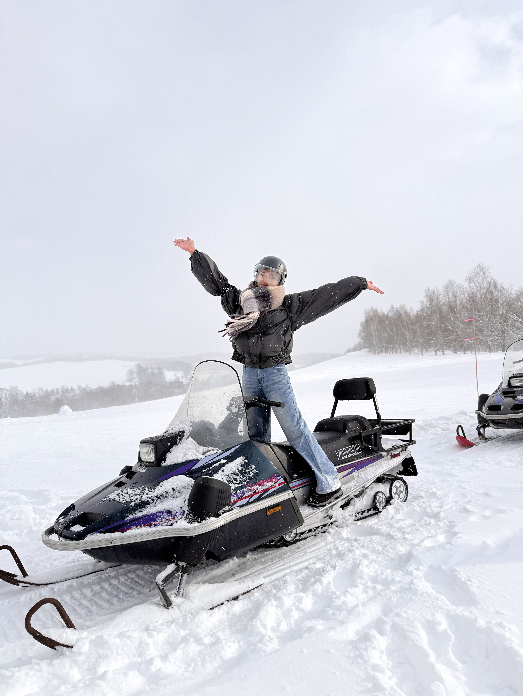
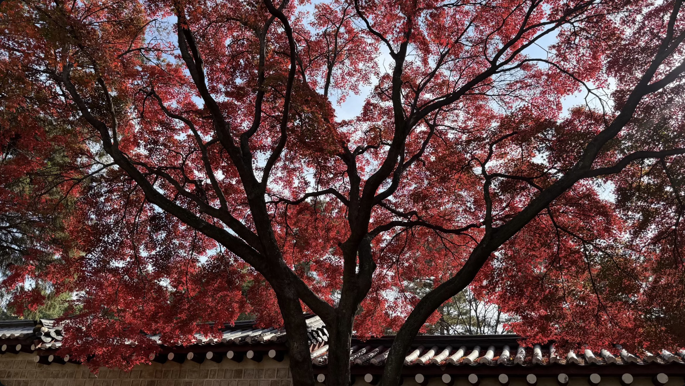
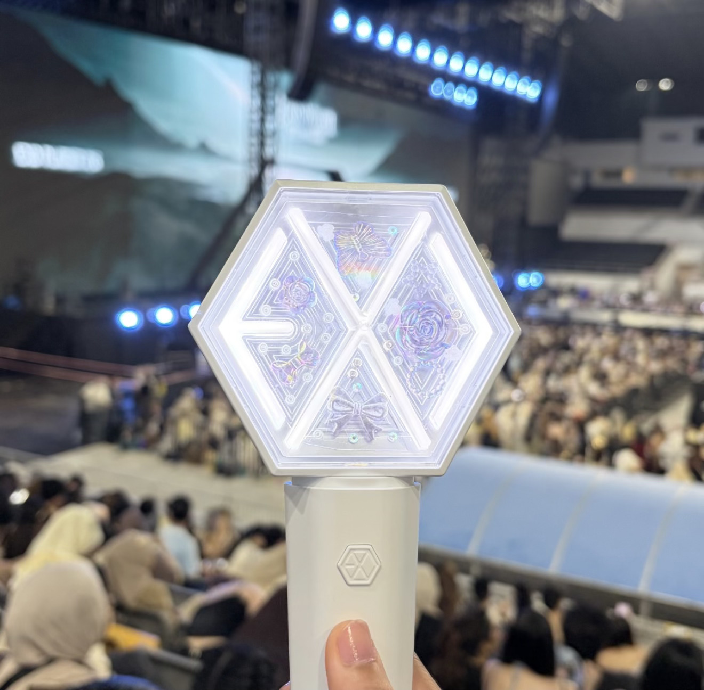

01
CREATIVITY & LEARNING
Exploring Technology
I enjoy discovering new technologies, learning about software development and exploring how digital solutions can make everyday tasks easier.
06 / BEYOND THE SCREEN
A collection of things I enjoy, experiences I value and interests that inspire me outside my academic life.
A DIFFERENT SIDE OF ME
Outside my studies, I enjoy exploring different interests and discovering new experiences. These activities allow me to relax, stay curious and maintain a healthy balance between work and personal life.
07 / THINGS I ENJOY
CREATIVITY & LEARNING
I enjoy discovering new technologies, learning about software development and exploring how digital solutions can make everyday tasks easier.

02DISCOVERY & EXPERIENCE
I enjoy visiting new places, experiencing different cultures and discovering interesting destinations along the way.

03VISUAL STORYTELLING
I appreciate capturing memorable moments, beautiful scenery and interesting details through photography.

04RELAXATION & INSPIRATION
Music is one of my favourite ways to relax, enjoy my free time and find inspiration throughout the day.
A LITTLE BIT OF EVERYTHING
Every experience is an opportunity to learn something new.
Let's Connect ↗